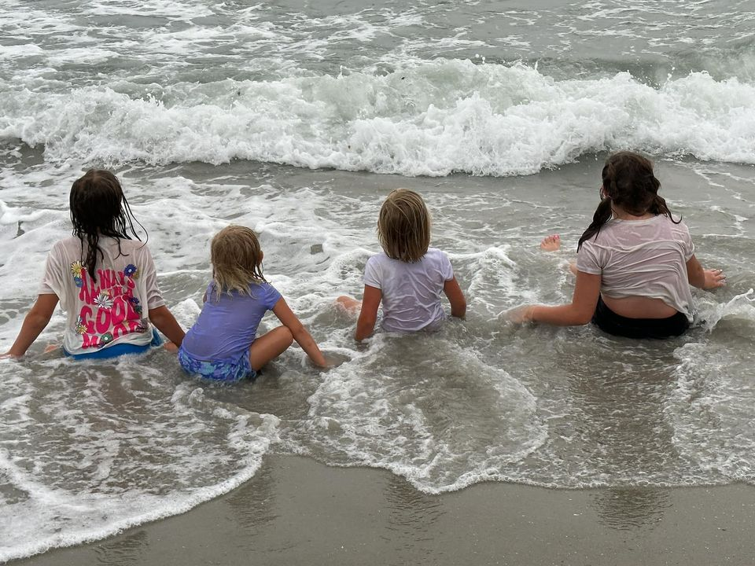

As I sit back and think about bringing home that newborn baby for the first time, the main thing that comes to mind
is complete and total.... fear and anxiety. Yes, I was excited. Yes, I was elated. However, the thought of taking
care of another human being absolutely terrified me to death. What if she stops breathing and I am asleep? What if
she doesn't use the bathroom as often as she is supposed to? What if I am doing everything completely and utterly wrong?
What I came to find was all of my insecurities was all actually quite normal, and I found that out by visitng with my
doctor. Having a baby is a huge life change and is something that does take some time to acclimate yourself to.
Don't feel guilty. Don't feel like you're alone. I feel like all new mothers at some point and time feel lonely
and like they aren't doing it all right. One thing to make sure that you are adequately able to care for your child
though is to also make sure you are taking care of yourself. Here are some things that I found to be extremely helpful
in my journey in settling into motherhood but also maintaining a sense of self.
Take a walk outside (even if it's just a short one)
Take a long, hot bath
Read a book (even if it's only 2 pages at a time)
Talk to your closest confidants or family members
Don't be afraid to share your feelings with others or ask for help
ACCEPT THE HELP! Especially in the early days.
If you feel yourself getting overwhelmed, remember to breathe deep and take a second to regain your composure
Lastly, don't be afraid to ask your doctor for recommendations if you feel that you are having a hard time adjusting to motherhood.
Sunday, June 16th--Vacationing with SO. MANY. KIDS.

One of our favorite places to visit as a family is Coligny Beach Park in Hilton Head, South Carolina.
That's actually where we are planning on going coming up very soon and my girls are extremely excited.
While the excitement of vacation is something I love, I also have the dread of the packing, planning,
and organizing that is inevitably upon me. With such a large family that is a huge task. Making sure
everyone has their proper amount of clothing, bathing suits, shoes, electronics, snacks, drinks,
and the list can honestly be overwhelmingly endless. To keep myself organized I make a list and check
off things as I get them accomplished. Cali needs 5 pairs of shorts, 5 tanks, 3 bathing suits, 2 pairs
of shoes, and her iPad? Check, check, and check. By clumping each person together along with their
individual needs for the trip, it allows me to check off individual lists as I get them packed.
Each individual person has their list, including myself, and each person helps gather their own things.
By making packing a family effort, it takes the load off of just one person. It works for my family and when
they have their own lists to go by, check off as they go, and then compile the suitcase. This is a little tidbit
that works for our family, and maybe it's something that may work for yours! The only things to make sure of when
traveling with your family it to remember to have fun! You're making memories with your family that will hopefully
last a lifetime. Remember to always find joy in the journey.